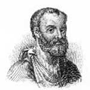

157 yılının sonbaharında genç bir doktor, günümüzde Türkiye sınırları içerisinde yer alan Roma yerleşimi Pergamum’da prestijli bir işe alınmıştı. Şehrin gladyatörleri için hekimlik yapacaktı. Roma İmparatorluğu’ndaki gladyatör savaşları çok kanlı geçerdi. Bu nedenle görevi sayesinde doktor, insan anatomisi üzerine çalışmak için eşsiz bir olanak bulmuştu.
Galen isimli bu doktorun (129-216) arenadaki ürkütücü deneyimleri, ileride yazacağı insan vücudu ile ilgili yüzlerce kitaba kaynaklık edecekti. Yaşadığı dönemde ve ölümünden bin yıl sonra bile Galen, Batı dünyasında tıp ve anatomi alanında önemli bir otorite olarak kabul edilecekti.
Nicon adlı zengin bir mimarının oğluydu. Galen on beş yaşındayken tıp okuluna gitmeye başladı. Zira babası bir rüya görmüş, rüyasında Yunan tanrısı Asclepius ona oğlunu bir doktor olarak yetiştirmesini öğütlemişti.

Genç bir hekim olan Galen, Roma coğrafyasının Yunanca konuşulan eyaletlerini dolaşmaya başladı. Daha sonra Pergamum’a dönüp gladyatörler için doktorluk yapmaya başladı. Asıl yaşamak istediği kent olan Roma’ya gitmeden önce Pergamum’da yaklaşık dört yıl kalacaktı.
Galen’in ilk Roma seyahati tam bir hayal kırıklığı oldu. 166 yılında Pergamum’a geri döndü. Üç yıl sonra bir veba salgınının baş göstermesi üzerine yeniden Roma’ya çağrıldı. Hayatının bundan sonraki bölümünü orada geçirecekti. Çeşitli imparatorlar için doktorluk yaptı. Onlara İtalya’da yürüttükleri askeri faaliyetleri sırasında eşlik etti.
İnsan vücudunu daha iyi anlayabilmek için maymun ve domuzlar üzerinde çalıştı. İnsan bedeni üzerinde otopsi yapması yasaklanmıştı. Bu kısıtlama onu insan bedeni üzerinde akıllıca tahminler yapmaya zorluyordu. Rönesans bilim adamları onun teorilerinin yanlışlığını kanıtlayana dek, Galen’in çalışmaları insan bedeni ile ilgili en önemli değerlendirmeler olarak kabul edildi.
Ek Bilgiler
1- Galen’in yaşamı boyunca üç yüz kitap yazdığı tahmin edilmektedir. İlk kitabı olan “Three Commentaries on the Syllogistic Works of Chrysippus” (Chrysippus’ın Karşılaştırmalı Çalışmaları Üzerine Üç Yorum) henüz on üç yaşındayken tamamlanmıştır.
2- 191 yılında Roma’daki Barış Tapınağı’nda meydana gelen yangın Galen’in kütüphanesinin önemli bir bölümünün yok olmasına neden oldu. Bu durumu fazla dert etmemişti: “Hiç bir kayıp beni kederlendirecek kadar büyük değildir.”
3- Galen üç Roma imparatoru için hekimlik yaptı: Marcus Aurelius (121-180), oğlu Commodus (161-192) (cinnet geçirdikten sonra suikaste uğradı) ve Commodus’un halefi Septimius Severus (146-211).